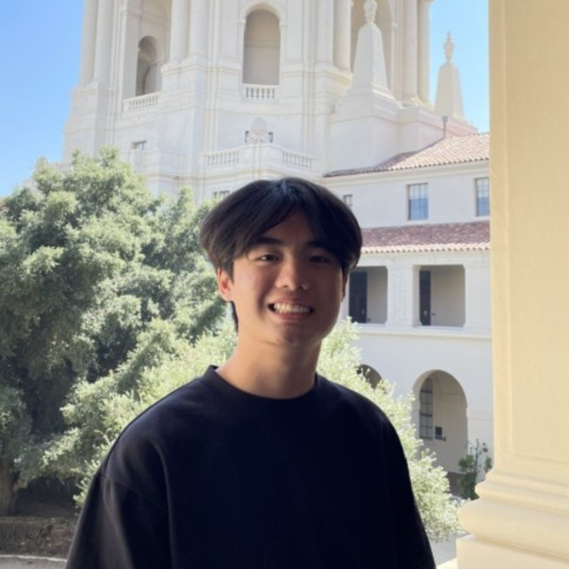

About Me
Hello! I'm currently a third year at UC Irvine studying Computer Science. I'm looking to build interesting things that innovate and solve problems for other people! I'd love to meet new people, connect, and have a chat! Feel free to reach out!
Technical Skills:
- Python
- C++
- SQL
- HTML
- CSS
Work Experience
Tech Fellow - CodePath
May 2025 - November 2025
- Supported CodePath’s TIP102 Technical Interview Prep course by mentoring 200+ students on data structures and algorithms using Python and effective interviewing techniques, strengthening technical problem-solving skills
- Monitored breakout rooms of 3-5 students, facilitating active technical conversation, identifying gaps in understanding, and providing real-time technical guidance, helping students apply concepts to practice problems
- Collaborated with 30+ CodePath staff to enhance the student learning experience by supplementing lecture material and refining curriculum accuracy, resulting in a 20% increase in satisfaction scores and course engagement
Software Engineer Contractor - Mercor
May 2025 - August 2025
- Accelerated large-scale language model development at an AI research lab partnered with Mercor by designing reproducible environments and efficiently managing dependencies across 150+ open-source Python repositories
- Utilized Docker to create containerized environments across Python 3.8–3.13, resolving dependency conflicts and maximizing test coverage, developing 100+ validation scripts to ensure reliable data pipelines for language models
- Conducted evaluations on 5 large language models using standardized prompts and open-source repositories, benchmarking output correctness, summarization quality, and reasoning consistency to guide model optimization
Software Development Research Intern - NASA SUITS
December 2023 - May 2024
- Enhanced safety measures for a health alert display system on the Local Mission Control Console with JavaScript and FastAPI to retrieve real-time user-specific biometric data updates, lowering emergency response times by 60%
- Configured update intervals using React and Typescript to ensure timely data refreshes in under one second, supporting seamless earth-space simulation transmissions and maintaining overall high quality system performances
- Streamlined live footage display using two camera feeds with the HoloLens API, reducing monitoring delays by 25%
Projects
Coauthor - AI Powered Research Assistant
Generative model that is designed to continuously learn from its own message history to generate credible academic sources on various topics, with timely responses within 30 seconds.
Won Best First Time Hack at SFHacks 2024, against 144 other participants
Technologies: Python, Selenium, Fireworks, Gemini
DevpostGluScale - Child-Friendly Glucose Monitor
Gamified experience for children to track glucose levels, receive recommendations for health monitoring, and accurate user health and blood sugar data.
Technologies: JavaScript, NextJS, Tailwind, React, Supabase
DevpostSift - Cross-Platform File and Message Search
Powerful desktop application that searches through different platforms and pass data into Groq for real-time inference.
Technologies: Python, NextJS, React, Rust, OAuth
Devpost